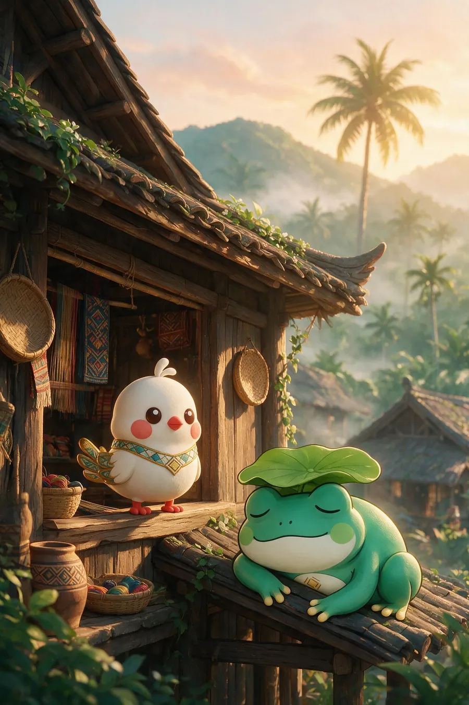
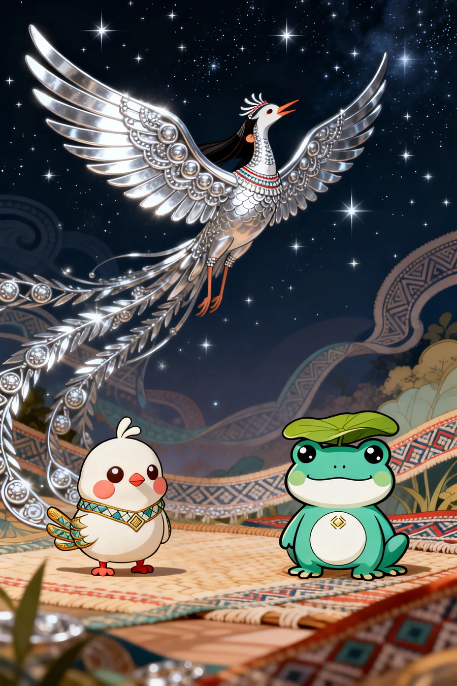

海南黎族 · 国家级非物质文化遗产Hainan Li Heritage · National Intangible Cultural Heritage
甘工鸟传说The Legend of the Gan Gong Bird
黎族民间最动人的爱情传说：黎家姑娘婀甘（也作阿甘、娲甘）与青年猎手拜和（也作劳海）相爱，遭恶霸峒主强抢。婀甘把银首饰捣成银翅膀化鸟飞去，拜和也毅然化鸟相随——从此一对比翼鸟在七仙岭（七指岭）上空比翼齐飞，昼夜啼鸣「甘工！甘工！」。黎锦与雕塑上的双鸟并飞纹样，由此而来。这是甘米米与呱噜噜的起点，也是整个「文化出海」的精神内核。The most moving love legend of the Li people: the Li girl Egan (also Agan / Wagan) and the young hunter Baihe (also Laohai) fell in love, until a cruel chieftain tried to seize her. Egan pounded her silver ornaments into silver wings and flew away as a bird; Baihe turned into a bird too and followed. Ever since, the pair has flown wing-to-wing over the Qixian (Seven-Immortals) Ridge, crying "Gan-gong! Gan-gong!" — the origin of the two-birds motif in Li brocade and sculpture. It is where Ganmimi and Gualulu began, and the heart of this whole journey.
顺着这条织线，读一段传说。Follow the thread and read the tale.

壹 七仙岭 · 传说诞生之地Qixian Ridge · where the tale was born第一章 · 相遇Chapter I · The Encounter
故事，从七仙岭下开始It begins below the ridge
传说诞生在海南保亭的七仙岭（也作七指岭）下。那里椰林环抱、云雾绕山：黎家姑娘婀甘会唱最动听的歌，也会织最密的黎锦；青年猎手拜和能射下最高的飞鸟，也最懂得心疼人。两人在岭下相遇，爱情像山泉一样，悄悄漫开。The legend was born below the Qixian Ridge in Baoting, Hainan — coconut groves ring the mountains and clouds drift around the peaks. There lived the Li girl Egan, who sang the sweetest songs and wove the finest brocade, and the young hunter Baihe, who could bring down the highest bird and loved her most gently. They met beneath the ridge, and love spread as quietly as spring water.
「七仙岭下的歌声，连风都愿意停下来听。」"Even the wind stops to listen to a song from the ridge."
 贰
椰林 · 月光下的约定Coconut grove · a vow under the moon
贰
椰林 · 月光下的约定Coconut grove · a vow under the moon
第二章 · 相恋Chapter II · The Vow
月光下的约定A vow under the moon
月光洒进椰林。婀甘把亲手织的黎锦带系在拜和手腕上，拜和则把一枚银首饰别在她的衣襟——那是她最心爱的饰物，也是后来化鸟的伏笔。两人约定：一生一世，不离不弃。黎锦上的人形纹，把这一刻悄悄记了下来。Moonlight spilled into the coconut grove. Egan tied a strip of her own woven brocade around Baihe's wrist, and Baihe pinned a silver ornament to her collar — her dearest keepsake, and a hint of what was to come. They vowed: together, always. The human motif in Li brocade quietly kept that moment.
「椰林下的约定，织进丝线就不会散。」"A vow made in the grove, once woven, never fades."
第三章 · 离别Chapter III · The Parting
命运，没有成全他们Fate did not grant them
可消息传到了恶霸峒主耳里。峒主垂涎婀甘的美貌，命家丁打伤拜和，要把婀甘强抢进门。婀甘宁死不从。望着被打倒的爱人，她把最后的心愿说给风听：如果不能留下，就让我变成一只鸟，永远留在这片椰林。But word reached the cruel chieftain. Coveting Egan's beauty, he had Baihe beaten and tried to seize her. She would rather die than yield. Looking at her fallen beloved, she whispered her final wish to the wind: if I cannot stay, let me become a bird and live forever in this grove.
「我宁愿化作飞鸟，也绝不低头。」"I would rather become a bird than bow my head."

肆 银翅膀 · 双鸟比翼Silver wings · two birds, one flight第四章 · 化鸟Chapter IV · The Sacred Bird
银翅膀：两只鸟，比翼齐飞Silver wings: two birds, wing to wing
情急之中，婀甘把身上所有的银首饰取下，一点一点捣成一对银翅膀。她插上翅膀，化鸟飞向蓝天，在空中盘旋，呼唤爱人的名字：「甘工！甘工！」倒下的拜和听见了，毅然挣脱束缚，也化作一只神鸟，追随她飞上云端。从此，两只鸟比翼齐飞，昼夜不息地啼鸣「甘工！甘工！」——人们便把这对比翼鸟称作「甘工鸟」。In desperation, Egan took off all her silver ornaments and pounded them into a pair of silver wings. She donned them and flew up into the sky as a bird, circling and calling her beloved's name: "Gan-gong! Gan-gong!" The fallen Baihe heard her, broke free, and turned into a sacred bird too, soaring up to join her. From then on, the two birds flew wing-to-wing, crying "Gan-gong! Gan-gong!" day and night — and people named this pair the Gan Gong Bird.
「甘工！甘工！——两只鸟的啼鸣，从此再没分开。」"Gan-gong! Gan-gong! — a cry that never parted."
 伍
双鸟并飞 · 黎锦纹样Two birds in flight · brocade motif
伍
双鸟并飞 · 黎锦纹样Two birds in flight · brocade motif
第五章 · 织锦Chapter V · The Weave
双鸟并飞，织进黎锦Two birds, woven into the brocade
思念不能说话，但可以织。黎家阿妈把「双鸟并飞」的甘工鸟纹织进黎锦，把自由与忠贞织进丝线；石匠把两只鸟刻进雕塑，让它们在人间并肩而立。纹样会说话，故事不会断。2009 年，黎族传统纺染织绣技艺被联合国教科文组织列入「急需保护的非物质文化遗产名录」。今天，我们依然能从一条黎锦里，看见那对比翼鸟。Longing cannot speak, but it can be woven. Li mothers weave the two-birds-in-flight Gan Gong Bird into brocade, weaving freedom and devotion into thread; sculptors carve the pair into stone, so they stand side by side in the world. Motifs speak, and stories never end. In 2009, the traditional Li textile techniques were inscribed on UNESCO's List of Intangible Cultural Heritage in Need of Urgent Safeguarding. Even today, a single piece of Li brocade still shows that pair of birds.
「纹样会说话，故事不会断。」"Motifs speak, and stories never end."
 陆
文化出海 · 从黎寨到世界Going global · village to world
陆
文化出海 · 从黎寨到世界Going global · village to world
第六章 · 出海Chapter VI · Going Global
今天，甘米米衔着传说出发Today, Ganmimi carries the tale out
甘米米，是婀甘化身的甘工鸟在现代世界的延续：那只带着银翅膀与黎锦织带的神鸟，决定把传说衔出海南。而拜和化作的另一只鸟，始终留在故事里，也留在黎锦「双鸟并飞」的纹样中，与她比翼同行。漫画、短片、多语之声，再到 IP 手办：这对「比翼鸟」的传说，开始被世界听见。Ganmimi is the Gan Gong Bird's continuation in the modern world — the sacred bird of silver wings and brocade bands, carrying the legend out of Hainan. The other bird, born from Baihe, stays in the story and in the two-birds motif of Li brocade, flying alongside her. Comics, films, voices in many languages, IP figurines: the legend of this pair is finally being heard around the world.
「故事从这里起飞——两只鸟，一起。」"The story takes flight from here — both birds, together."
纹样与传说小词典A Little Dictionary of Motifs
读懂黎锦，就读懂了黎家人的心事。Read the brocade, and you read the Li heart.
传说源流The Origin
甘工鸟传说流传于海南黎族民间，核心设定是「两只比翼鸟」：少女婀甘化鸟后，恋人拜和也化鸟相随。因地域不同，人名与细节有差异（婀甘/阿甘/娲甘，拜和/劳海等），但「两只鸟比翼齐飞」始终一致——黎锦甘工鸟纹与雕塑常以双鸟并飞为图案，象征自由与永恒爱情。
The Gan Gong Bird legend circulates among Hainan's Li people. Its core is "two inseparable birds": after the girl Egan became a bird, her lover Baihe became one too and followed. Names and details vary by region (Egan / Agan / Wagan; Baihe / Laohai), but the two-birds-in-flight core never changes — the motif in Li brocade and sculpture stands for freedom and eternal love.
纹样含义The Motifs
黎锦纹样里，甘工鸟纹象征忠贞与思念，常见「双鸟并飞」构图；人形纹记录生活与祖先；蛙纹承载黎族对生命繁衍的崇拜。一针一线，皆有来处。
In Li brocade, the bird motif stands for devotion and longing, often as two birds flying side by side; the human motif records life and ancestors; the frog motif honors fertility and new life. Every stitch has its source.
非遗地位The Heritage
黎族传统纺染织绣技艺，2009 年列入联合国教科文组织"急需保护的非物质文化遗产名录"，世界承认了这份来自海南的匠心。
In 2009, the traditional Li textile techniques of spinning, dyeing, weaving and embroidering were inscribed on UNESCO's List of Intangible Cultural Heritage in Need of Urgent Safeguarding: the world recognized this craft from Hainan.
我们如何讲述这段传说How We Tell This Legend
我们忠实讲述真实的民间故事：甘工鸟从一开始就是两只鸟。甘米米以黎家姑娘婀甘为原型——她是在传说里捣碎银首饰、化作银翼神鸟的那只鸟；青年猎手拜和化身的另一只鸟，始终存在于故事里，也存在于黎锦「双鸟并飞」的纹样中。我们还没有为拜和单独设计 IP 形象，但传说里一直有他的位置：比翼齐飞，一个都不能少。
We tell the real folk story faithfully: the Gan Gong Bird has always been two birds. Ganmimi is based on the Li girl Egan — the one who pounded her silver ornaments into silver wings and became the sacred bird. The other bird, born from the young hunter Baihe, lives on in the story and in the two-birds motif of Li brocade. We haven't designed a separate IP for Baihe yet, but he always has his place in the legend: wing to wing, never one without the other.


传说长出翅膀之后After the legend grows wings
被甘米米打动了吗？Moved by Ganmimi?
把故事带回家，也把海南文化带向世界。
Take the story home, and carry Hainan's culture out to the world.